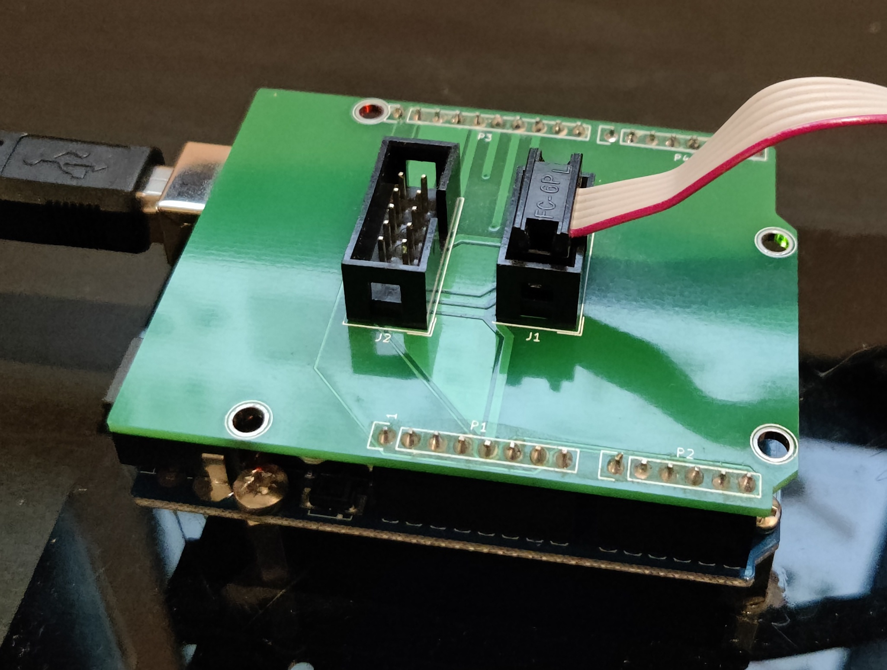
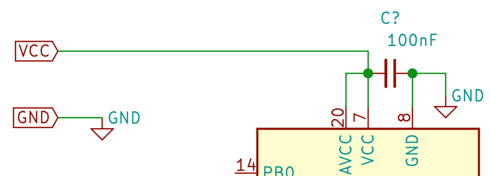

The projects outlined in this repository are intended for "bare metal" AVR programming. That is - compiling, debugging and flashing your application without an underlying operating system, directly to the target MCU using the AVR toolchain and an ISP programmer, rather than using the simpler and more user-friendly (but somewhat limiting) Arduino framework.
The Blink example isn't a particularly groundbreaking project, but it serves to verify that the setup of your development environment and configuration of the target MCU have been performed correctly, before moving onto more complex projects and examples where issues could be harder to diagnose.
Software Requirements
A Source Code Editor
I like Sublime Text, but there are plenty to choose from, some popular choices are:
The AVR Toolchain
MacOS
AVR CrossPack will provide everything you need to develop for AVR on MacOS; the GNU compile suite, C libraries for the AVR, the AVRDUDE uploader and more.
Linux
Debian/Ubuntu distributions
It's helpful to update all your current installed packages first.
sudo apt-get updatesudo apt-get upgrade allThen we can install the required packages.
sudo apt-get install avrdude avrdude-doc gcc-avr binutils-avr avr-libc gdb-avr
Red Hat and Fedora distributions
It's helpful to update all your current installed packages first.
sudo yum updatesudo yum upgrade-allThen we can install the required packages.
sudo yum install avrdude avr-gcc avr-binutils avr-libc avr-gdb
Windows
Windows users can use the official toolchain from the manufacturer, Microchip Studio (formerly ATmel). This is an IDE so it's full of features, but also has a relatively steep learning curve - follow their tutorial here to get to grips with it.
A Serial Terminal Program
This is used later in the more advanced modules to send messages between your PC and the target MCU. You'll find it's a vital debugging tool when coupled with the log_system module. I tend to use CoolTerm which is available for free on MacOS, Windows and Linux.
Hardware Required
An AVR microcontroller
An ATmega328P-PU is a good place to start - It's a DIP package so fits nicely in a breadboard or an IC socket, has a whopping 32KB of flash memory (ok it's not much but you can do a surprising amount with that), and 3 GPIO ports. This chip is ubiquitous so you'll have no problem finding hardware to support it - it's actually the MCU the Arduino Uno is built around.
It's worth noting that the ATmega328P now has a status of "Not recommended for new designs" meaning the model is being gradually phased out in favour of the newer ATmega328PB. Code written for the 328P will still work fine on the 328PB thanks to backwards compatability, but it is not a drop-in replacement, so the pinout will be different. For more info on the differences betwenn the two, see application note AT15007. Most of the examples in this repository will be using the ATmega328P, and it is strongly advised to refer to it's datasheet if you are unsure about anything along the way.
Whilst the datasheet may be overwhelming at first, it's best to get used to referring to it as you go. It's also worth pointing out at this stage that you aren't expected to read it cover to cover as if it were a novel. Use the index menu in your PDF browser to home in on the chapter or section that sounds like it might be most relevant to the register or peripheral you're working on.
An ISP Programmer
Such as an AVRISP MKII, however that model is not compattible with MacOS, so instead I use an Arduino Uno with the "Arduino as ISP" sketch flashed to it, and a simple shield I made - though you can achieve the same thing with some dupont cables if you don't want to wait for the shield to come back from fab. The Arduino as ISP sketch can be found in the Arduino IDE. 
A USB to Serial Converter
There are many types available, I use one of these. Not required for the Blink example but useful for the log_system module and debugging your projects.
Various USB cables
It's useful to keep several USB cables, micro, mini, USB-A etc.
Breadboards
I like these ones with the power supply module for small test projects, and these ones for larger, more complex projects. For anything beyond that, I would design a development PCB with lots of connection and expansion flexibility.
Power Supply (optional)
Most ISP programmers will provide a 5V power line for your MCU, however this is likely sourced from your PC's USB port, and there are a few things to be aware of here. First, most USB ports can only source upto 500mA, so if your project is likely to come close to or surpass that limit, you wil need to provide an external power supply capable of sourcing that much current. Also note the GPIO's on the AVR aren't able to source (or sink) much current, 40mA is the upper limit, so further driver circuitry will be needed to drive larger loads.
Jumpers/Dupont cables
A set of breadboard jumper cables is handy to keep your close wiring neat and tidy, then a set of various lengths and connection types of dupont cables is useful to connect to other peripherals.
An assortment of components
A kit like this one is a frugal way to source many of the components and accessories needed - plus some extras which might come in handy along the way. You will certainly need a selection of resistors, capacitors, LEDs etc.
A multimeter
A multimeter like this one will help with debugging when hardware is involved. An oscilloscope gives an extra dimension of insight into your circuits and applications, but they are an expensive piece of kit so a little out of reach for beginners.
Connecting the Hardware
The following setup guide is for an ATmega328P, so if you're starting with a different model it's best to refer to your part's datasheet for pinout, auxillary components needed, power requirements etc, but the broad principles should be much the same.
The pinout of the ATmega328P is shown below.
MCU Connections
Note the 100nF ceramic capacitor between VCC and GND, this is for decoupling and filtering of the power supply, so should be placed as close to the pins as possible. 
You can use the MCU with just it's internal oscillator as a clock source (8MHz or 1MHz depending on configuration), or if you'd prefer a faster clock speed you can use an external crystal oscillator upto 20MHz. Refer to your chip's datasheet and application notes for details on oscillator circuit design.
Connect a GPIO pin (PB0 in this example) to an LED, with a 220Ω resistor in series with the anode, and the cathode to ground.

Programmer Connections
The IDC connector on your ISP programmer should be connected to the target MCU as shown in the images below. The schematic symbols on the left depict the end of the IDC connector - Note the notch on the right hand side - if you turn the connector to face you and rotate it so the notch is on the right, your orientation will be correct.
If you're using an Arduino Uno as an ISP with some dupont cables, then you can make the connections between that and the target MCU as per the schematic below.
Connect the programmer to your PC, then check which serial port it's on. If you have the Arduino IDE, you can go to Tools > Port > port address is shown here.
For MacOS and Linux, open Terminal and type ls /dev/tty* for a list of connected devices. The programmer will look something like /dev/tty.usbmodem141201.
For Windows, it will look something like COM3.
In Terminal/cmd, type avrdude to check the AVRDUDE software has been correctly installed. It should give you a helpful list of options you can use.
Now we can check the programmer and target MCU are connected and being recognised correctly by typing something along the lines of:
But replace m328p with your MCU type, 19200 with the baud rate of your serial programmer, avrisp with your programmer type and /dev/tty.usbmodem141201 with the port address your programmer is connected to if different from these.
You should then see a success message like the one below. If not, check your wiring and connections, check the target MCU is powered, and check the programmer type, baud rate and AVR chip type are correct.
Configuring the Makefile
The Makefile is there to make your life easier. Instead of having to type out commands and options along with files and dependancies each time you want to build and flash your application, you can just define some variables in a Makefile, then all you have to do is type make to build your application.
Download the source folder in this repository and open up the Makefile. The following variables need to be edited for your setup.
MCU, Programmer and Directory variables
MCU
This is the AVR chip type, a list of valid names can be found here.
F_CPU
This is the clock speed in Hz - Note the UL assignment (Unsigned Long). For the examples covered in this repo we will be using the 8MHz internal oscillator as a clock source for simplicity, though you can use an external clock source upto 20MHz if you'd prefer. By default, the AVR fuses will be set to divide the internal clock speed by 8 (resulting in a speed of 1MHz) but we will override that with some Makefile settings.
BAUD
This is the baud rate used for serial comms with the AVR, usually 9600 but sometimes differs.
LIBDIR
A directory for common include files, some of which are installed with the AVR toolchain.
PROGRAMMER_TYPE
The type of ISP programmer you're using. A list of valid names can be found here.
PROGRAMMER_ARGS
Extra arguments to avrdude: baud rate, chip type, -F flag, etc. This baud rate is for serial comms to the programmer. The port address also goes here.
Fuses
WARNING Take great care when editing these variables, they can brick the MCU if set incorrectly. Always refer to the datasheet if unsure, especially if you are using a different MCU to the ATmega328p. And note that they use an inverse logic - the bit will read 1 if unprogrammed, and 0 if programmed. A handy fuse setting calculator can be found here.
Default Fuse Values
The default fuse values in the Makefile have been set to work with the following MCUs:
- ATmega48
- ATmega88
- ATmega168
- ATmega328
If you are using a different MCU, check the default fuse values here, then change the value of these variables.
LFUSE
Low fuse byte. This is used to select the clock source and some config settings for clock operation. The default value in hexadecimal format is 0x62.
HFUSE
High fuse byte. This is used for bootloader memory allocation, EEPROM, watchdog timer, programming and reset options. The default value is 0xD9.
EFUSE
Extended fuse byte. This is used to configure brown-out detection. The default value is 0xFF.
Custom Fuse Values
The custom fuse values in the Makefile have been set to use the internal clock source at 8MHz, for the aforementioned MCUs, so you will need to edit these if you have chosen a different MCU. If you want to customise the fuse settings yourself, then edit these custom values, but don't touch the Default fuse values so you can revert them later if needed.
LFUSE_CUSTOM
Low fuse byte. This is used to select the clock source and some config settings for clock operation.

HFUSE_CUSTOM
High fuse byte. Bits 2 - 0 are used to select the amount of memory allocated for a bootloader (not required for the projects in this collection). The remaining bits are used to control EEPROM, watchdog timer, programming and reset options. SPIEN and RSTDISBL are the dangerous ones likely to brick your MCU if set incorrectly, so only touch these if you know what you're doing.
EFUSE_CUSTOM
Extended fuse byte. This is used to set the brownout detection level. "Brown-out" is the term for the power supply voltage dropping to a point which is unsuitable for the MCU to function properly. If BOD (Brown-Out Detection) is enabled, the reset pin will be held low while a brown-out condition is detected. BOD is not required for the projects in this collection.
Make Commands
With the Makefile correctly configured, you are now ready to start using the commands it defines. Open Terminal and navigate to the directory where you stored the local copy of the source folder you downloaded. Type make help to print a list of commands to the terminal - shown below.
Show Fuses
To see the fuse values already set on the target MCU, type make show_fuses. Data will be read from the chip and output via the terminal. An example of that output is shown in the image below.
Flash Fuses
First we need to flash the fuse settings. To do this, type make set_custom_fuses and the custom values from your Makefile will be written to the chip. You only need to do this when a chip is new, in an unknown state (eg. when re-used from a previous project) or you want to change the fuse settings. These new settings will be "burned" into the register and remain even after the chip is powered down. To revert to default fuse values, run make set_default_fuses.
Flash the Code
Now we are finally ready to flash the code. Type make flash, and the source code will be compiled, linked and written to the MCU.
Basic Make Commands
maketo compile the source code based on the settings in your Makefile.make flashto compile and flash the code to the target MCU.make cleanto delete the compiled output files from the current directory.
These can of course be combined like so: make clean flash, though you do not need to run clean each time - usually make flash works just fine. Output is shown below.
Verify Makefile Settings
You should now have an LED which blinks on and off in a 2 second cycle - 1 second on, followed by 1 second off. If it is blinking considerably faster or slower than this, check that the value of F_CPU and LFUSE are set correctly.
Once you are satisfied that the LED is blinking as it should be, you're ready to proceed to the more exciting projects and examples in this repo!
If you're ready to start developing using your own source code, some blank template files can be found here.
Further Reading
GNU Make Utility
If you'd like to learn more about the GNU Make Utility, more information can be found here. I found it to be a steep learning curve, so if you'd rather not wade into it just yet there are plenty of Makefile generators around. The Makefile used in these projects was adapted from the code provided with the book Make: AVR Programming by Elliot Williams. His repo, hexagon5un/AVR-Programming has some great example projects, and I would thoroughly recommend the book to anyone looking to get into AVR Programming.
Style & Layout Guide
For a comprehensive guide on layout, style and documentation, see the Anatomy of Embedded Firmware page.
Documentation
Documentation is provided throughout this site using Doxygen. Output of the Doxygen documentation for the Blink project can be found here.
Coding Standards
Adhering to coding standards helps to make your code more readable, robust, easier to debug and more portable. The firmware in this repo was written to the Barr Group C Coding Standard, and I would encourage others to read it and use those guidelines in their own code.